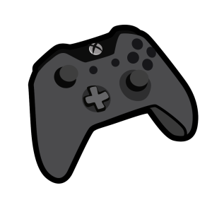

Ha.. Bienvenue dans la Communauté Totsuka ! Un discord où on s'ennuie jamais!
Tu aimes l’univers de Naruto sans pour autant être incollable sur le sujet ? ou tout simplement les mangas, les jeux vidéos et jouer en ligne ? Alors ce Discord est fait pour toi!
Le thème principal de notre Discord est basé sur Naruto: nous organisons des guerres de clans qui ont tout le temps lieu.
Avant de débuter les guerres de clans (qui ont commencés en mars 2019) le serveur était principalement basé sur une communauté FR du jeu de Naruto x Boruto Ninja Voltage; Un jeu sur mobile. 4 guildes qui permettaient et permettent toujours, à la fois, de rencontrer de nouvelles personnes, de participer à notre fameuse GDC (Guerre Des Clans) ou encore de tout simplement partager les passions que nous avons en communs !
Si au début, l'activité principale tournait autour du jeu de N&B Ninja Voltage… sa célébrité tombant au fin fond du puit des oubliettes.. Il a fallu Innover ! Et nous voilà aujourd'hui avec une magnifique communauté ! Grandissante qui chaque jour s'améliore et est agrémentée de nouvelle idée ! Grâce à nos membres créatifs et à une équipe staff soudée et à l'écoute !
Sujets
pour vous évoquer les sujets principaux qui comblent ce serveur, nous allons vous donner quelques explications :
-
Naruto
Le thème principal du Discord est Naruto car nos clans reprennent ceux de Naruto (Uchiha, Uzumaki, Senju et Akatsuki) et comme expliqué plus haut, avant, nous n'étions qu'une communauté d'un jeu Naruto. Cependant, force des choses à voulu que nous travaillions afin de vous offrir un serveur évolutif et amusant !
-
Mangas
comme toute bonne communauté appréciant les jeux vidéos et Naruto, il fallait bien aussi, le côté Otaku! Plusieurs channels dédiés aux Waifus et aux différents aspect des mangas dans tout leurs états, vous sont ouverts pour vous permettre de passer le temps et de découvrir plein de nouvelles choses !
-

Jeux vidéos
Bah oui ! Nous n'allions pas passer à côté de la catégorie jeux vidéos ! Puisque c'est le sujet de base de ce serveur ! Dans ses Channels, vous trouverez toutes les informations nécessaires, qui vous tiendront au courant de l'ascension, de l'évolution des jeux, vous pourrez discuter et publier vos questions, vos résultats et bien d'autre encore !
-
RôlePlay
Manga, jeux vidéos… Évidemment, il fallait aussi subvenir aux besoins et envies des membres fanatiques du RôlePlay ! Alors si vous en faites partie, n'hésitez jamais à être curieux et à aller jeter un coup d'œil aux Channels dédiés à cet effet ! En constante évolution, toujours !